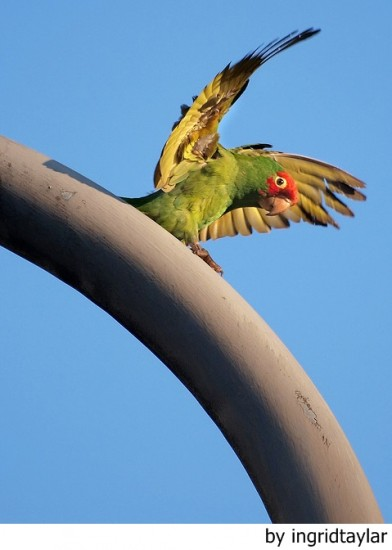

PÁJAROS

PREVENCIÓN DE LAS ENFERMEDADES DEL CANARIO

Alimentación correcta
La alimentación correcta es muy importante en la prevención de enfermedades. Todo pájaro que sufra de carencias en alguno de los nutrientes esenciales será más susceptible de contraer una enfermedad, mientras que los pájaros sanos y en buena forma física tendrán suficiente fuerza para combatirla. No escatime en semillas de buena calidad, y si es posible, adquiera las mejores marcas del mercado.
Higiene correcta
Un entorno limpio y una atmósfera limpia reducirán tanto la proliferación de parásitos y de bacterias como la extensión de las infecciones transmitidas por el aire. Cada vez que vacíe la jaula, desinféctela a fondo. Dejar las jaulas de vez en cuando vacías ayuda a interrumpir el ciclo biológico de los parásitos y el desarrollo de las bacterias. La luz solar es un buen desinfectante y, por consiguiente siempre que limpie alguna parte de la instalación, lo mejor es que la ponga a secar al sol.
Cuarentena
Siempre que ello sea posible, todo nuevo pájaro que se añada al conjunto deberá mantenerse separado de los demás, en una habitación aparte, y durante 10 días como mínimo, para comprobar que no está incubando una enfermedad. Al mismo tiempo puede realizar un tratamiento de rutina contra las lombrices y los parásitos externos. Un buen control de todo el conjunto de canarios y el aislamiento inmediato de todo pájaro en el que se observen síntomas de enfermedad no sólo constituyen la mejor solución para dicho pájaro sino que además reducen las posibilidades de que se propague la afección.
Prevención rutinaria de la enfermedad
Deberá pulverizar periódicamente a los canarios contra los parásitos externos y controlar regularmente que no tengan lombrices y/o huevos de lombrices en las heces, Administre suplementos en la dieta (vitaminas/preparados minerales), sobre todo durante las épocas de mayor estrés.
Falsa muda
Lo normal es que una, dos, o hasta tres veces al año (en función de la raza), el pájaro mude sus plumas. Es un proceso natural mediante el cual el animal renueva su plumaje eliminando todo lo que esté en mal estado. Ahora bien, si el ave se ve expuesto a temperaturas demasiado elevadas, puede verse obligado a repetir la operación constantemente, puesto que intenta evitar que la temperatura de su cuerpo suba en exceso. Además de un desgaste físico y psicológico, para el animal puede acarrear graves problemas de salud puesto que altera su ciclo natural, por lo que no buscar solución al problema puede incluso llevar a su muerte. Por ello, ante un caso de falsa muda lo mejor cambiar la jaula de sitio, moverla a un lugar más fresco… O bien regular mejor la temperatura de casa.
- Mal proceso de muda: si de golpe se nota un cambio de color en las plumas, significa que la muda no ha sido llevada a buen puerto, debido a que el crecimiento de las nuevas se ha detenido inesperadamente. Puede deberse a traumas debidos al movimiento de la jaula, a una mala alimentación, o a problemas de hígado que necesariamente debe tratar un veterinario.
Mal nacimiento de plumas
Además de provocar una detención del crecimiento del plumaje, una mala alimentación puede provocar que las plumas nazcan torcidas, desordenadas o con un color apagado. Si esto ocurre, conviene descubrir qué estamos haciendo mal lo antes posible para evitar problemas mayores.
Picaje
El picaje se da cuando el pájaro se autolesiona arrancándose las plumas a picotazos. Puede deberse al estrés o a la presencia de parásitos (y puede que lo segundo resulte de lo primero), y aunque puede parecer poco importante al principio, no tarda en convertirse en una dolencia muy molesta para el animal, por lo que al menor síntoma se deben tomar las medidas necesarias de desparasitación externa (consultando con un veterinario, claro).
LA IMORTANCIA DE LAS PLUMAS
